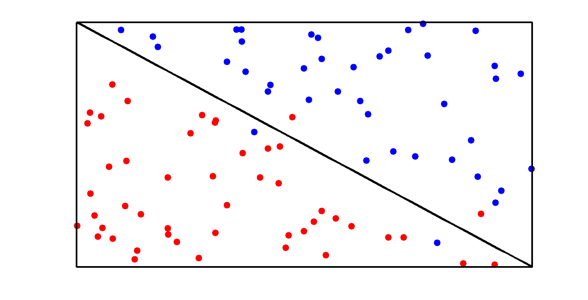
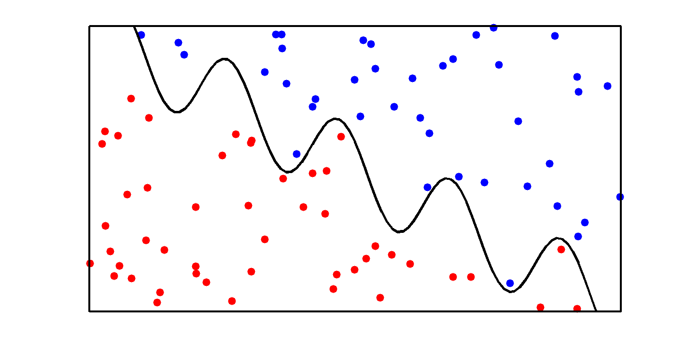

Illustration of a linear vs 'wiggly' decision boundary.
We make four misclassifications using the linear boundary and none using the 'wiggly' boundary; however, in the latter case, we may have overfit.
Contents
% This file is from pmtk3.googlecode.com function decisionBoundaryLinearVSwiggly
domain = 0:0.01:1; f = @(x)1-x; g = @(x) f(x) + sin(30.*x)./7; setSeed(15); data = rand(100,2); s = sum(data,2); data(s > 0.95 & s < 1.05,:) = []; data = sortrows(data); class1 = data(sum(data,2) <= 1,:); class2 = data(sum(data,2) > 1,:);
outliers
class2 = [class2; class1(31,:)]; class1(31,:) = []; class1 = [class1; class2(11,:)]; class2(11,:) = []; class2 = [class2;class1(45,:)]; class1(45,:) = []; class1 = [class1;class2(33,:)]; class2(33,:) = []; plotData; plot(domain,f(domain),'-k','LineWidth',4); printPmtkFigure('decisionBoundaryLinear'); plotData; plot(domain,g(domain),'-k','LineWidth',4); printPmtkFigure('decisionBoundaryWiggly'); function plotData figure('Color',[1,1,1]); hold on; axis([0,1,0,1]); set(gca,'box','on','XTick',[],'YTick',[],'LineWidth',3,'Color',[0.95,0.95,0.95]); plot(class1(:,1),class1(:,2),'.r','MarkerSize',40); plot(class2(:,1),class2(:,2),'.b','MarkerSize',40); maximizeFigure; pdfcrop; end 
end